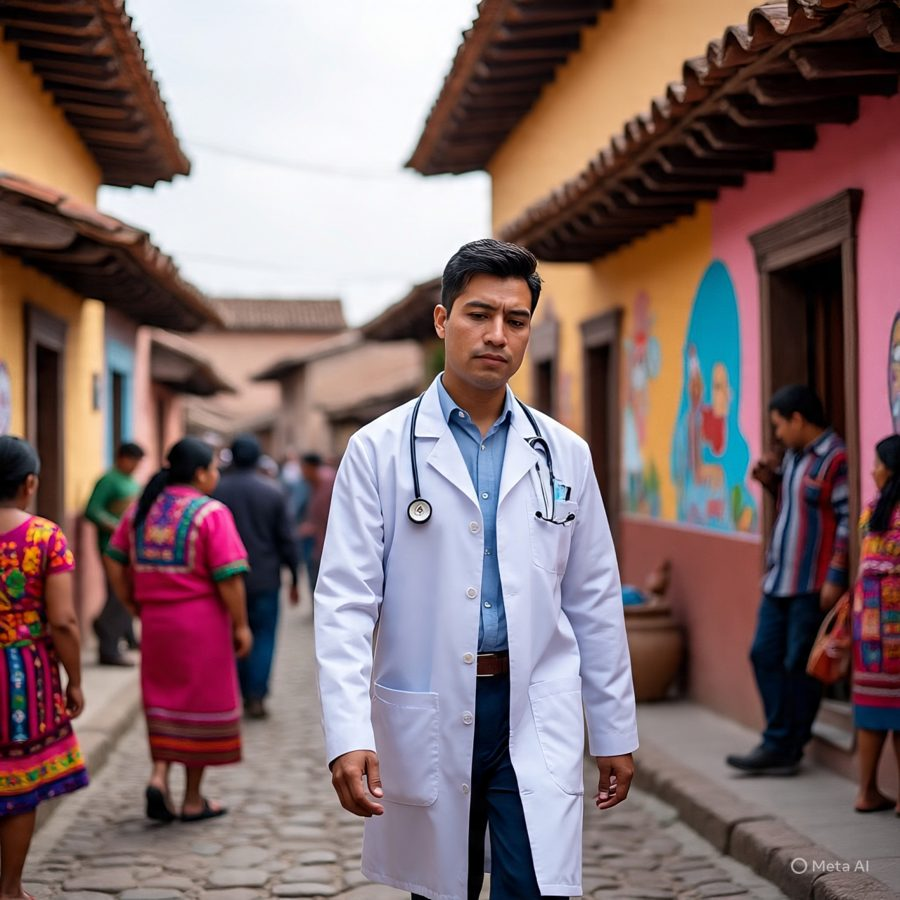

Полевой отчёт · Обновлено в октябре 2026 г.
Неравенство в здоровье в сельской Гватемале и влияние клиники доктора Пелико
Сельская Гватемала сталкивается с одним из самых серьёзных неравенств в здоровье в Центральной Америке. Его причины — географическая изоляция, языковая изоляция, хроническое недофинансирование и почти полное отсутствие медицинских специалистов, говорящих на языках коренных народов. В этом отчёте собраны доступные данные общественного здравоохранения и результаты работы на местах в Aldea Pitzal, где доктор Пелико реализует модель помощи, укоренённой в сообществе и доступной на родном языке пациентов.
1. Почему медицинская помощь так труднодоступна
Расстояние. Около 80% врачей Гватемалы работают в городе Гватемала, из-за чего сельские районы хронически недостаточно обслуживаются. В департаменте Альта-Верапас, где живут многие общины коренных народов, 23% населения находятся более чем в часе пути от любого базового медицинского учреждения. Сельские семьи коренных народов часто добираются до диагностического учреждения 3–6 часов, а дорога может стоить Q100–Q150 — нередко больше недельного дохода семьи.
Стоимость. Частные клиники берут около Q300 ($40) за приём, тогда как сельские семьи часто зарабатывают Q15–Q25 в день. Один приём может стоить столько же, сколько доход за несколько дней.
Язык. В Гватемале 25 языков коренных народов, и 40% населения относят себя к коренным народам, однако большинство медицинских работников говорят только по-испански. Для пациентов, говорящих на к’иче’, недопонимание ведёт к ошибочным диагнозам, недоверию и отказу от помощи.
Недофинансирование. Общие расходы Гватемалы на здравоохранение составляют около $392 на человека в год (WHO, 2023) — лишь малая часть того, что тратят более богатые страны. Система разделена на государственный, частный сектор и сектор социального обеспечения, причём государственный сектор несёт основную нагрузку по оказанию помощи в сельской местности, имея при этом меньше всего ресурсов. В сельских клиниках часто не хватает лекарств, визуализации, лабораторий, электронных записей и обученного персонала, а показатели здоровья матерей и детей остаются одними из самых тревожных в Центральной Америке.
Вместе расстояние, стоимость, язык и недофинансирование порождают страдания, которых можно было бы избежать.

2. Результаты работы на местах в Aldea Pitzal
Aldea Pitzal — это реальная жизнь, стоящая за национальной статистикой. На этом фоне доктор Пелико оказывает доступную по цене, понятную на родном языке и непрерывную помощь.
- Единственная круглосуточная клиника в регионе, обслуживающая тысячи людей в высокогорье.
- Помощь на трёх языках как мера общественного здравоохранения. Свободное владение к’иче’, испанским и английским устраняет один из главных барьеров к получению помощи, восстанавливает доверие, обеспечивает точную диагностику и информированное согласие и связывает клинику с международными партнёрами.
- Этичная и доступная помощь: Q25 ($3) за приём по сравнению с Q300 ($40) в частных клиниках.
- УЗИ на месте для наблюдения за беременностью на ранних сроках, выявления материнских состояний высокого риска, диагностики органов брюшной полости и малого таза и мониторинга хронических заболеваний.
- Электронная медицинская карта на к’иче’, которая поддерживает этичный учёт данных, непрерывность помощи, готовность к исследованиям и понимание потребностей на уровне сообщества.
3. Измерение изменений: Community Impact Measure (CIM)
Программа PAMA Equity in Action измеряет результаты с помощью Community Impact Measure, который оценивает четыре области от 0 до 5 баллов каждую, в сумме от 0 до 20:
- Доступ к помощи — посещения клиники, сокращение транспортной нагрузки, доступность по цене, ночная неотложная помощь
- Расширение клинических возможностей — диагностический потенциал, обучение УЗИ, принятие решений с опорой на электронную медицинскую карту
- Доверие сообщества — показатели последующего наблюдения, удержание пациентов, участие, общение на трёх языках
- Устойчивость инфраструктуры — персонал, цифровые системы, протоколы непрерывности помощи, готовность к исследованиям
| Год | CIM | Этап |
|---|---|---|
| 2024 | 5 | Начальный этап: ограниченная диагностика, минимальный персонал, высокая доля направлений |
| 2025 | 15 | Значительное влияние: УЗИ и расширенные часы работы повышают доступность и удержание пациентов |
| 2026 | 17 | Преобразование: обучение УЗИ завершено, наняты новые медсёстры |
Что обеспечило изменения в 2024–2026 годах:
- +200% диагностического потенциала после внедрения УЗИ
- +150% наблюдения за матерями и раннего выявления
- +300% непрерывности помощи с опорой на электронную медицинскую карту
- +40% удержания пациентов благодаря общению на трёх языках
- На 60% меньше необоснованных направлений в город Гватемала
- 2026: новые медсёстры, расширенные часы работы, более надёжные системы последующего наблюдения

4. Что показывают результаты
Сочетание технологий, языковой доступности, доступной цены и круглосуточной работы привело к структурным изменениям в здоровье сообщества. К 2026 году клиника достигла 17 баллов по CIM, что отражает устойчивый доступ, высокую диагностическую самостоятельность, прочное доверие сообщества и надёжную инфраструктуру. Эта динамика показывает, что помощь под руководством представителей коренных народов, укоренённая в сообществе и поддерживаемая цифровыми технологиями, может быстро и измеримо сокращать неравенство в здоровье в сельской Гватемале.
5. Взгляд в будущее
Государственному здравоохранению Гватемалы нужно не просто больше финансирования, а структурная трансформация, которая начинается с доверия, языковой доступности и местного лидерства. Вместе с нашими партнёрами PAMA видит сеть клиник по всей Гватемале под руководством представителей коренных народов — каждая с диагностическим оборудованием на солнечной энергии, культурно адаптированными медицинскими картами и персоналом, свободно говорящим на местных языках, — и модель, которую можно масштабировать на другие недостаточно обслуживаемые регионы.
Эти усилия — не благотворительность. Это инвестиции в равенство в здоровье во всём полушарии, основанные на убеждении, что местные медицинские работники должны сами руководить преобразованием своих систем.
Источники
- Pan‑American Medical Association (PAMA). Полевые отчёты, журналы внедрения диагностического оборудования и данные Community Impact Measure, 2024–2026.
- PAMA. Программа Equity in Action: расширение диагностики в сельской Гватемале. Внутренняя документация, 2024–2026.
- Borgen Project. Доступ к здравоохранению в Гватемале: неравенство между городом и селом.
- UNICEF, WHO и World Bank. Joint Child Malnutrition Estimates, по данным Global Nutrition Report, Guatemala Country Nutrition Profile.
- WHO. Global Health Expenditure Database: текущие расходы на здравоохранение на душу населения в Гватемале, 2023.
- WHO и Межучрежденческая группа ООН по оценке детской смертности (UN IGME), по данным Our World in Data, профиль здравоохранения Гватемалы.
- PAHO/WHO. Health in the Americas: Guatemala Country Profile.
- UNICEF Guatemala. Дети коренных народов и барьеры в доступе к основным услугам.
- USAID. Отчёт об укреплении систем здравоохранения Гватемалы.